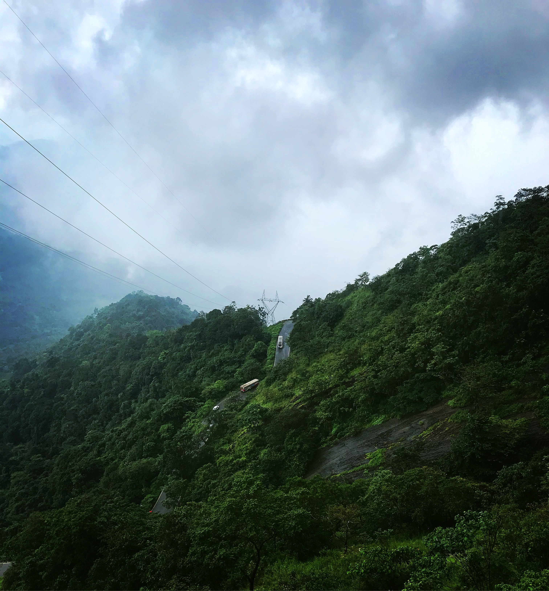
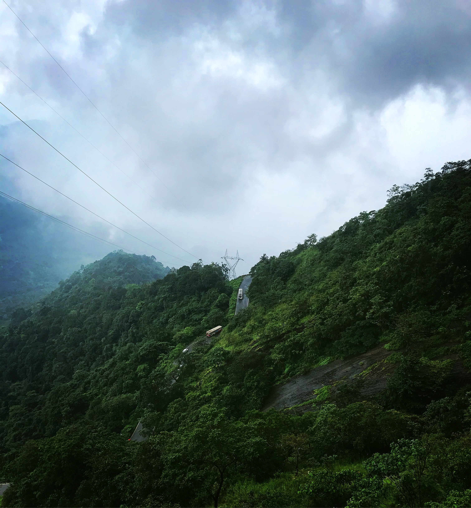
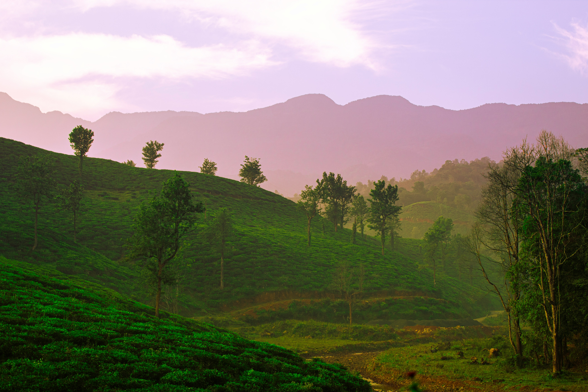

WAYANAD
Wayanad is a picturesque district located in the state of Kerala, India, nestled in the Western Ghats. Known for its lush green landscapes, mist-covered hills, and abundant biodiversity, Wayanad offers a serene escape for nature lovers. The region is characterized by dense forests, spice plantations, and numerous rivers and waterfalls that contribute to its breathtaking scenery.
One of the prominent attractions in Wayanad is the Wayanad Wildlife Sanctuary, which is home to a variety of flora and fauna. Visitors can spot elephants, deer, tigers, and a wide array of bird species in their natural habitat. The Edakkal Caves, an archaeological wonder, showcase ancient rock engravings and are of historical significance. The Banasura Sagar Dam, the largest earthen dam in India, is another popular destination, offering mesmerizing views of the surrounding hills and a peaceful boat ride.
Apart from its natural beauty, Wayanad is also known for its rich cultural heritage. The indigenous tribal communities, such as the Paniyas, Kurichiyas, and Kurumas, add a unique cultural dimension to the region. Traditional art forms, festivals, and handicrafts are integral to the local way of life, providing visitors with a glimpse into the vibrant cultural tapestry of Wayanad. Whether seeking adventure in the great outdoors or exploring the cultural nuances, Wayanad stands out as a captivating destination in the southern part of India.
 

Wayanad, situated in the state of Kerala, India, boasts a rich history dating back to ancient times. The region's name, Wayanad, is believed to be derived from "Vayal Nadu," which translates to the land of paddy fields. Archaeological findings in the Edakkal Caves reveal evidence of prehistoric human settlements, with Neolithic and Mesolithic cave paintings that date back to around 6000 BCE. These ancient artworks offer a fascinating glimpse into the early human habitation of Wayanad.
During the medieval period, Wayanad became a pivotal center for the spice trade. It attracted the attention of various dynasties, including the Cheras, Cholas, and the Vijayanagara Empire. Indigenous tribes like the Kurumbas and Paniyas inhabited the region during this time, maintaining unique cultural practices and contributing to the area's diverse heritage. The spice trade also brought Wayanad into the sphere of European powers, with the British establishing their presence in the 18th century. The colonial era witnessed the construction of roads and the development of plantations, shaping the landscape of Wayanad.
In the post-independence period, Wayanad continued to be an integral part of Kerala. The region underwent social and economic changes, with a focus on agricultural development. In 1973, the Wayanad Wildlife Sanctuary was established to preserve the unique biodiversity of the area, reflecting a growing awareness of the importance of conservation. Today, Wayanad stands as a harmonious blend of its historical past and the vibrant present, attracting tourists with its lush landscapes, wildlife, and cultural heritage. The remnants of its history, from ancient cave paintings to colonial-era architecture, contribute to the allure of this picturesque district in the Western Ghats.